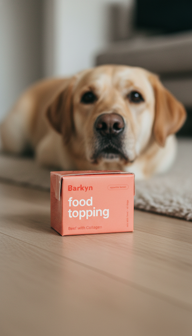

AI Creative Photshoot · Photo Preview
What Barkyn could look like
A first batch of AI-generated product photography, built from your brief, your products, and your brand direction.



A first batch of AI-generated product photography, built from your brief, your products, and your brand direction.

A Golden Retriever sits upright and engaged behind a warm terracotta table holding all three Barkyn products: the fresh yellow box centre-back, the coral Beef topping to the left and the sage Chicken topping to the right. The real Barkyn taupe bowl filled with fresh food sits in the foreground, surrounded by a whole carrot, broccoli, scattered peas and a sprig of rosemary. Dappled natural light falls across a sage green wall behind the dog. Every product label is readable. The complete Barkyn longevity plan in a single shot.
Broccoli, two carrot rounds, a chunk of sweet potato, a rosemary sprig, a cluster of peas and a raw chicken cube all hang suspended mid-fall above a cream ceramic bowl already filled with Barkyn fresh food. Clean warm ivory background, nothing else. No branding needed: the ingredients make the entire argument. This is the conceptual shot from your brief that communicates "only good stuff goes in here" at a glance.
Five hands enter the frame from every direction, each holding a Barkyn Chicken with Krill and Omega-3 topping box. The background is the exact same sage green as the box itself, creating a bold monochrome effect where only the white "food topping" and teal "Barkyn" typography cut through. Hard directional shadows from a single overhead light source give it graphic punch. This is the kind of image that builds instant brand recognition and stops people mid-scroll.
A hand tips the Barkyn fresh inner transparent pouch directly into the Barkyn ceramic bowl. The food, visibly packed with carrot rounds, peas, rice and chicken, cascades naturally mid-pour. The yellow Barkyn fresh box stands upright to the left, label fully readable. A whole carrot lies on the surface to the left, a fresh parsley sprig sits to the right. This shot directly communicates the core product promise: no fridge, no freezer, no cooking. Just open the pack and serve.
The coral Barkyn Beef with Collagen topping box sits sharp and front-facing on a warm wooden floor. Behind it, a Labrador lies with chin low and eyes forward, completely focused on the box. Shot in a real home environment with a rug and natural ambient light in the background. The dog does all the selling. No copy needed: any dog owner looking at this image immediately recognises that look.

A hand holds the large cream Barkyn ceramic bowl from below while a dog dips its snout in to eat, tongue visible. The bowl contains the full Barkyn longevity stack: dark kibble on one side, fresh food with carrot rounds on the other, and the liquid topping already drizzled across both. Only the hand, bowl and the dog's lower face are visible. Close, warm and unposed. This is the feeding shot from your brief, shot from the perspective of the person holding the bowl, capturing the moment that matters every day.